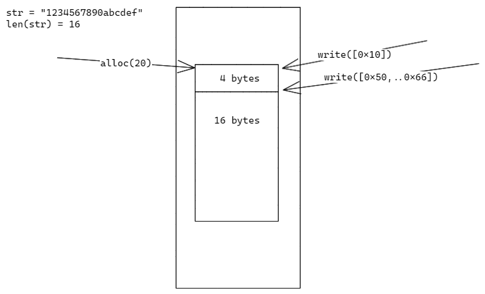

简介
这是一个基于ChangeStream和WebAssemblly实现的外部MongoDB触发器
参考MongoDB官方的Trigger：
https://www.mongodb.com/docs/atlas/app-services/triggers/database-triggers/
为什么要创建这个项目？
MongoDB ChangeStream 有许多应用场景：
- 数据迁移/数据同步
- （微服务）变化监听
- 实时分析/实时通知
- 事件驱动架构组件
- 交互系统
要实现这些功能，我们需要编写以下代码，将代码部署到服务器并进行维护：
coll := get_coll(mongodb_uri)
cs := watch(coll)
loop {
event := cs.next()
handle(event) # 业务逻辑
}
我们需要一个服务，让用户能订阅自己感兴趣的 ChangeStream 事件，并编写一个函数来进行业务处理，即可实现上述的功能。这样，我们将节省很多时间（编写重复代码）和服务器成本（部署代码）。
创建函数
你可以使用任何编程语言来编写你的函数，前提是它能够将你的代码编译成 wasm 文件。
这里我们用仓库里的一个 Go 示例项目（go-event-handler），来演示怎么编写代码并构建出一个 wasm 文件。
安装环境
Clone 示例代码
❯ git clone https://github.com/Joeyscat/open-mongodb-trigger.git
❯ cd open-mongodb-trigger/examples/wasm/go-event-handler
❯ tree
.
├── entry.go
├── Event_json.go
├── EventResult_json.go
├── go.mod
├── go.sum
├── lib.go # 在 handlerEvent 函数中添加你的代码
├── Makefile
├── model
│ ├── ChangeNamespace_json.go
│ ├── ChangeStreamEvent_json.go
│ ├── EventResult_json.go
│ ├── model.go
│ └── ResumeToken_json.go
├── model.go
└── README.md
编写函数
修改 lib.go 文件中的 handlerEvent 函数。
编译代码
❯ make build
go generate model/model.go
tinygo build -o target/example_wasm_go_event_handler_lib.wasm -target wasi
❯ tree target/
target/
└── example_wasm_go_event_handler_lib.wasm
部署 wasm 函数
编译得到 wasm 文件之后，就可以用它来创建一个函数。
❯ tri function create -h
create a function
Usage: tri function create --name <NAME> --path <PATH> --type <TYPE> --user-id <USER_ID> --lang <LANG>
Options:
-n, --name <NAME>
-p, --path <PATH> path of the function file (*.wasm)
-t, --type <TYPE> now supported: wasm
-u, --user-id <USER_ID>
-l, --lang <LANG>
-h, --help Print help information
创建函数成功我们会得到一个函数 ID ，后面创建触发器的时候会用到。
创建触发器
看看如何通过 CLI 创建一个触发器：
❯ tri trigger create -h
create a trigger
Usage: tri trigger create --name <NAME> --user-id <USER_ID> --type <TYPE> --source <SOURCE> --database <DATABASE> --collection <COLLECTION> --operation-types <OPERATION_TYPES> --function-id <FUNCTION_ID>
Options:
-n, --name <NAME> # 触发器名称，对于同一个用户不能重复
-u, --user-id <USER_ID> # 用户ID，代表触发器所有者
-t, --type <TYPE> # 触发器类型，当前仅支持 database
-s, --source <SOURCE> # 监听的数据源，就是一个MongoDB连接串
-d, --database <DATABASE> # 监听的数据库
-c, --collection <COLLECTION> # 监听的集合
-o, --operation-types <OPERATION_TYPES> # 监听的操作类型
-f, --function-id <FUNCTION_ID> # 函数ID
-h, --help Print help information
函数 ID 就是前面我们创建函数返回的结果。
触发触发器
只要我们做出了触发器所关注的操作，相应的函数就会被执行。
CLI
CLI 是用于访服务接口的客户端工具，用户可以使用该工具上传自己编译的处理函数，创建触发器。
❯ tri -h
Usage: tri [OPTIONS] [NAME] [COMMAND]
Commands:
test does testing things
trigger trigger manager
function function manager
help Print this message or the help of the given subcommand(s)
Arguments:
[NAME] Optional name to operate on
Options:
-c, --config <FILE> Sets a custom config file
-d, --debug... Turn debugging information on
-h, --help Print help information
-V, --version Print version information
函数
我们的函数是通过运行在 Wasmtime 之上的，所以这里的函数指的不是我们编写的业务处理代码，而是将代码编译处理得到的 wasm 文件。理论上我们可以用任何支持 wasm 的编程语言来编写处理代码。
关于函数的一些约定
具体实现请查阅 wasm 模块代码
这是我们规定的函数签名，函数名为 event_handler_entry，参数和返回值各一个，都是32位无符号整型；
//export event_handler_entry
func EventHandlerEntry(p *uint32) uint32 {
//
}
目前 Wasmtime 只支持传递基础类型的参数，所以我们想要传递复杂参数就得绕个弯去实现。
简单总结下就是：
- 首先调用内存分配函数分配内存，拿到内存地址
- 往这块内存写入参数
- 调用我们自己的函数（如
event_handler_entry），传入上面的内存地址 - 在我们的函数中通过地址反推得到参数，执行业务代码
- 函数的结尾将需要返回对象的指针返回
- 函数返回后，通过返回的指针反推得到执行结果
注意在上述过程中执行环境会在 Host 环境和 Wasm 环境来回切换。
如何根据参数指针反推出完整参数？
我们在分配内存时多申请4byte，前4byte固定用来保存参数大小，如图：

当然作为用户是不需要了解这些东西的，我们已经为部分编程语言实现了这些业务无关的代码，用户只需要在模板的基础上添加自己的逻辑即可。
已支持的编程语言
触发器
开发者指南
项目结构
项目分为以下模块：
Trigger- 负责触发器元数据的存储管理Function- 负责函数元数据的存储管理Service- 为 Trigger 、 Function 模块暴露 gRPC 服务接口；订阅触发器元数据的变更，根据变更开启/关闭对关联数据源的订阅，并在收到事件时调用 WASM 模块执行触发器关联的函数WASM- 封装了 wasm 运行时，用于执行触发器关联函数的代码CLI访问 gRPC 服务的客户端
开发计划
- 指标监控
- 目前整个项目是一个单体应用，会通过 WASM 模块执行用户的 wasm 代码，很容易成为瓶颈。我们需要重新构建相关代码，使 WASM 模块能够独立部署，随着负载进行扩缩容。
- Service gRPC 接口鉴权